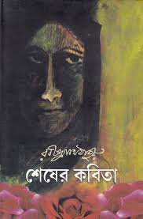
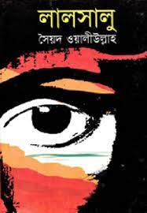

Bangla

Pather Panchali
The Song of the Road : Both bitter and sweet in its accounts of life and relationships in the village and then in the city, the novel provided a cast of memorable characters both representative and individualistic. A lyrical and yet down-to-earth style marked a significant departure from the effusive prose favoured by Tagore and the dramatic format that Chattopadhyay had picked as its own. Very few novels can forge the kind of bond with readers that this one does. Rating 4.3/5 Genre : Novel

Padma Nadir Majhi( The Boatman on the Padma)
Centred on the attempts of a rural businessman to build a utopian commune on an island in the delta of the river Padma, this exploration of the psyches of human beings and the impact of individual choices on society weaves through romantic, commercial and social relationships in the course of telling its tale, building into a magnificent climax. Rating 4/5 Genre : Fiction
Sheser Kobita
The novel recounts the love story of Amit Ray living in Kolkata in the 1920's. Though he is a barrister educated at Oxford his main interest lies in literature. Never afraid to speak his mind, he is always ready to challenge society's pre-established knowledge and rules regarding literature, equal rights and so on. While vacationing in Shillong, he comes upon a governess named Labanya in a minor car accident. Amit's iconoclastism meets Labannya's sincere simplicity through a series of dialogues and poems that they write for each other. Rating 4.8/5 Genre : Novel
Lalsalu
The novel starts with the description of Mohobbotnagar village and the difficulties of village life. A clever man named Majid arrives in the village and realizes that most of the men in the village are simple minded and can easily be fooled through religious superstitions. Majid starts scolding the villagers claiming that they haven't taken care of the grave of the Mudassir Pir (fake name given by Majid to make his intention come true) and tells them a made up story of a pir (Religious magician) showed him a dream that his grave is not being taken care of and that the people of that area are sinners. Almost every one of the village believed Majid's story including the so-called head of the village, Khalek Bepari. Majid makes a good impression on everyone in the village including Khalek Bepari. The villagers repaired the grave, made a majar (Shrine) and a house for Majid. Majid then starts living there and becomes wealthy by fooling the people of the village with the means of fake religious teachings. Majid also marries Rahima, a widowed lady who is a cowardly and obedient wife. Majid faces many problems as few people go against him such as Hasuni's grandfather, Khalek Bepari's senior wife, Akkas Mia for establishing a school and the arrival of a great Pir in Awalpur. But very cunningly he solves all these problems. Majid later also marries a teen girl named Jamila (as a second wife), who later on get punished for going against Majid's false teachings which results in her eventual death.
Genre : Novel